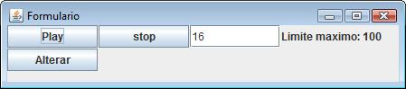

| Arquivo: JavaTeste.java |
| import javax.swing.*; import java.awt.*; import java.awt.event.*; public class JavaTeste extends JFrame { private JLabel maximo; private JTextField posicao; private JButton play_pause; private JButton stop; private JButton alterar; int pos = 0; int max = 100; int tempo = 1000; boolean Xplay_pause = false; String play_pause_text = "Play"; public JavaTeste() { super("Formulario"); this.setSize(400,200); this.setLocation(50, 100); Container ct = this.getContentPane(); ct.setLayout(null); play_pause = new JButton("Play"); play_pause.setBounds(0,0,100,25); ct.add(play_pause); stop = new JButton("stop"); stop.setBounds(101,0,100,25); ct.add(stop); posicao = new JTextField("0"); posicao.setBounds(202,0,100,25); ct.add(posicao); maximo = new JLabel("Limite maximo: "+max); maximo.setBounds(303,0,300,25); ct.add(maximo); alterar = new JButton("Alterar"); alterar.setBounds(0,26,100,25); ct.add(alterar); Image Icone = Toolkit.getDefaultToolkit().getImage("icon.gif"); setIconImage(Icone); this.setVisible(true); alterar.addActionListener(new ActionListener() { public void actionPerformed(ActionEvent e) { xStop(); String _maximo = JOptionPane.showInputDialog("Limite maximo: "+max); if(!(_maximo.equals("") || _maximo.equals(null))){ int xMax = xMaximo(Integer.parseInt(_maximo)); maximo.setText("Limite maximo: "+xMax); } String _posicao = JOptionPane.showInputDialog("posicao: "+pos); if(!(_posicao.equals("") || _posicao.equals(null))){ int xPos = xPosicao(Integer.parseInt(_posicao)); posicao.setText(""+xPos); } String _tempo = JOptionPane.showInputDialog("tempo: "+tempo); if(!(_tempo.equals("") || _tempo.equals(null))){ xTempo(Integer.parseInt(_tempo)); } }}); stop.addActionListener(new ActionListener() { public void actionPerformed(ActionEvent e) { int xPos = xStop(); posicao.setText(""+xPos); }}); play_pause.addActionListener(new ActionListener() { public void actionPerformed(ActionEvent e) { play_pause.setText(getPlayPause()); }}); this.addWindowListener(new WindowAdapter() { public void windowClosing(WindowEvent e) { System.exit(0); }}); } public static void main(String[] args) { new JavaTeste(); } public int xStop(){ pos = 0; Xplay_pause = false; play_pause.setText("Play"); return pos; } public int xMaximo(int x){ max = x; return max; } public int xPosicao(int x){ pos = x; return pos; } public int xTempo(int x){ tempo = x; return tempo; } public String getPlayPause(){ if(Xplay_pause == false){ Xplay_pause = true; getPlay(); play_pause_text = "Pause"; } else { Xplay_pause = false; play_pause_text = "Play"; } return play_pause_text; } public void getPlay(){ Thread runner = new Thread(new Runnable() { public void run() { while(Xplay_pause == true) { pos = pos + 1; try { Thread.sleep(tempo); } catch (Exception ex) {} if(pos > max){ Xplay_pause = false; pos = 0; } posicao.setText(""+pos); } }}); runner.start(); } } |